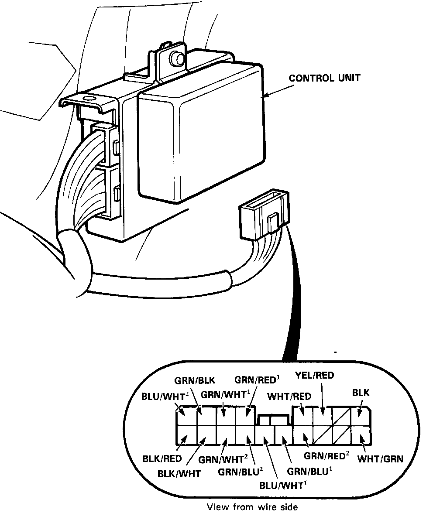
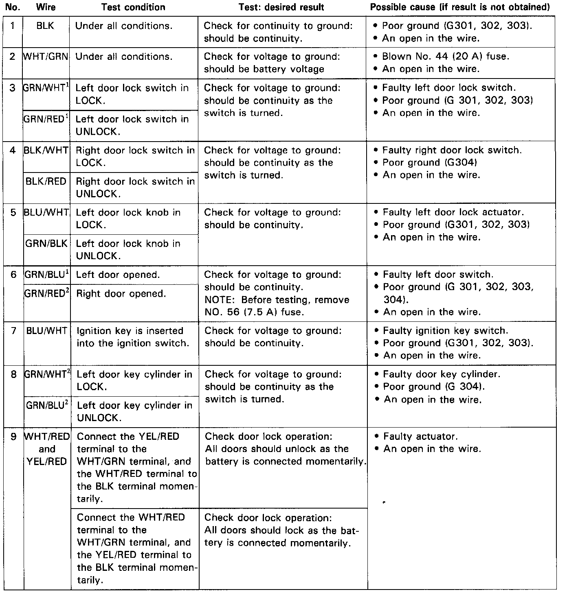

Power Door Lock Control Module: Testing and Inspection
Power Door Lock Control Unit Input Test
Remove the dashboard lower panel, then disconnect the 18-P connector from the control unit.
Make the following input tests at the harness pins.
NOTE:
^ Recheck the connections between the 18-P connector and the control unit, then replace the control unit if all input tests prove OK.
^ Several different wires have the same color. They have been given a number suffix to distinguish them (for example GRN/RED1 and GRN/RED2 are not the same).

NOTE: Left and right doors in above tests mean driver's door and passenger's door only.